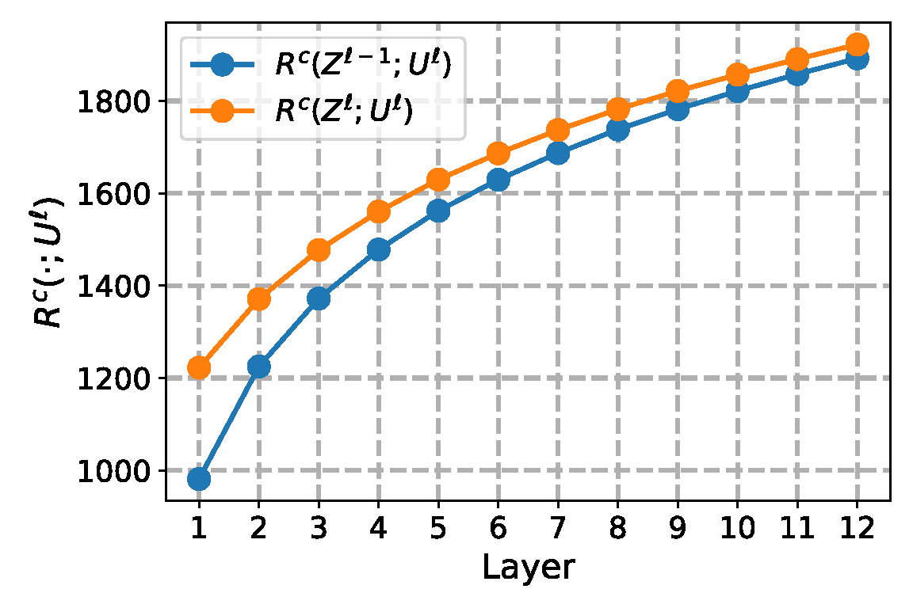

|
Yunzhe Hu I'm a PhD student at the School of Computing and Data Science, University of Hong Kong, advised by Prof. Dong Xu, and have worked with Prof. Difan Zou. Previously, I received my bachelor's degree from Shanghai Jiao Tong University in 2022, where I studied control science and engineering. I’m currently working on empowering an agent to learn from play (suboptimal trajectory) without hand-crafted extrinsic rewards and adapt in few/zero-shot. I have also done research in bridging the gap and revealing the connections between energy-based learning and practical Transformer design. Email / Google Scholar / X / Github |
{kind=link}
ResearchI'm interested in robot learning, deep reinforcement learning, and machine learning in general. Below are first-authored papers during my PhD. See the full list on Google Scholar. |

|
Hyper-SET: Designing Transformers via Hyperspherical
Energy Minimization
Yunzhe Hu, Difan Zou, Dong Xu ICLR, 2026 project page / paper / arXiv / code / slides / poster / bibtex A principled, top-down Transformer design grounded in energy-based interpretation: symmetric attention, feedforward, and RMS normalization all emerge from iterative constrained energy minimization on the hypersphere, yielding a compact recurrent-depth model competitive across reasoning, classification, and masked modeling tasks. |
|
 |
An In-depth Investigation of Sparse Rate Reduction in Transformer-like Models
Yunzhe Hu, Difan Zou, Dong Xu NeurIPS, 2024 paper / arXiv / slides / poster / bibtex
|
Miscellanea |
|
Talks
|
|
Academic Service
|
|
Teaching
|
|
Last updated: April 25, 2026 |
Thanks for Jon Barron's website. |